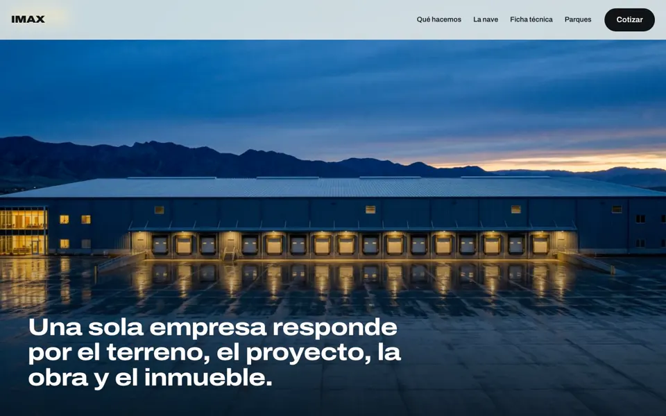
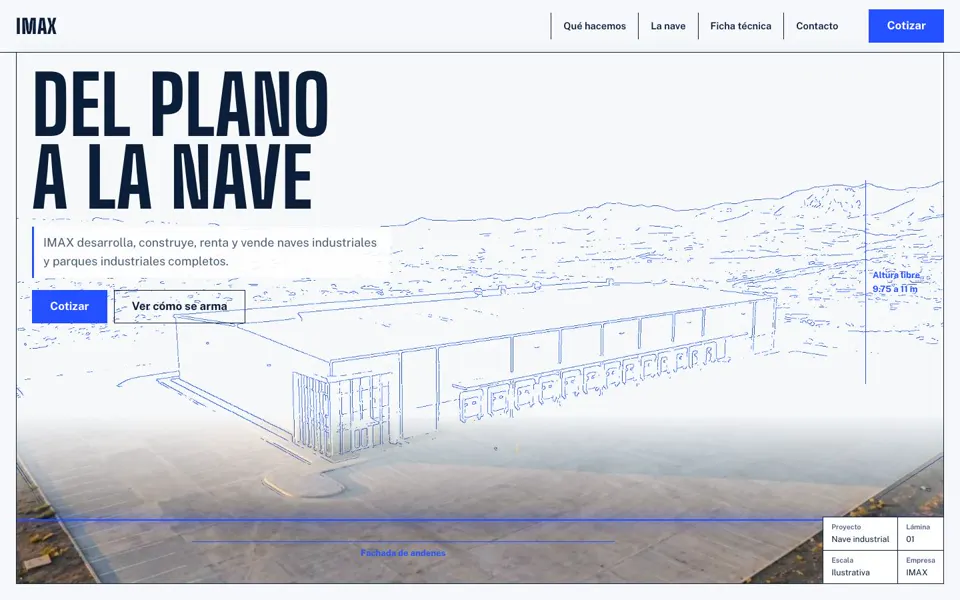
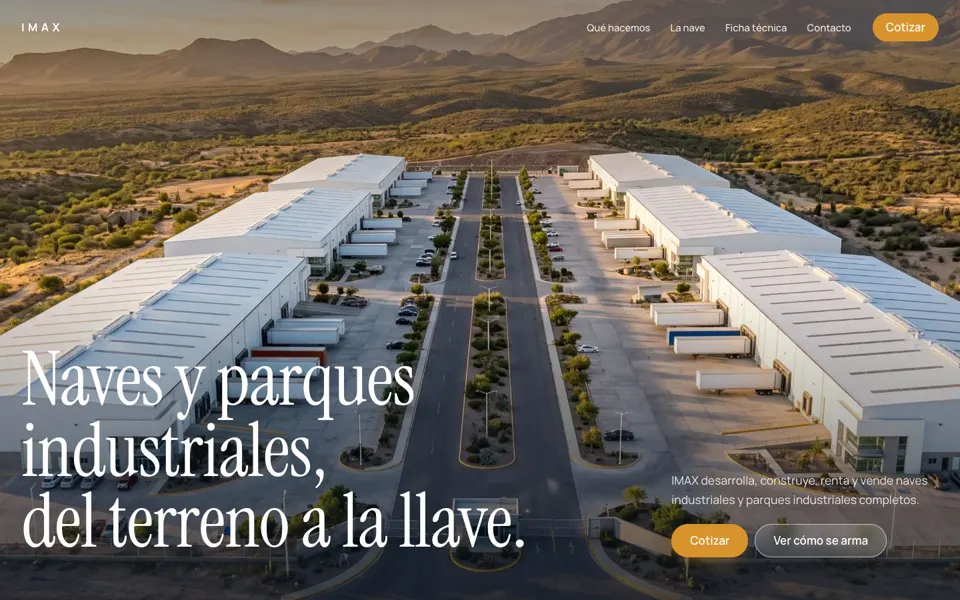

Opciones de diseño para IMAX
Tres direcciones claras, con el mismo contenido y las mismas imágenes, para comparar con el sitio actual. Ábrelas y baja con el scroll: todas tienen la nave que se arma de polvo a nave.

A. ConcretoClara e industrial: gris cemento, negro y amarillo de seguridad. El video crece de tarjeta a pantalla completa.

B. PlanoBlanco y azul de ingeniería, con retícula de plano. La portada empieza como dibujo y se vuelve foto.

C. Hora doradaBlanca y premium, de desarrollador inmobiliario: tipografía con serifa, fotos a la hora dorada y dorado de acento.
Sitio publicadoLa opción A construida completa, con todos los efectos, en grupoimax.mx.